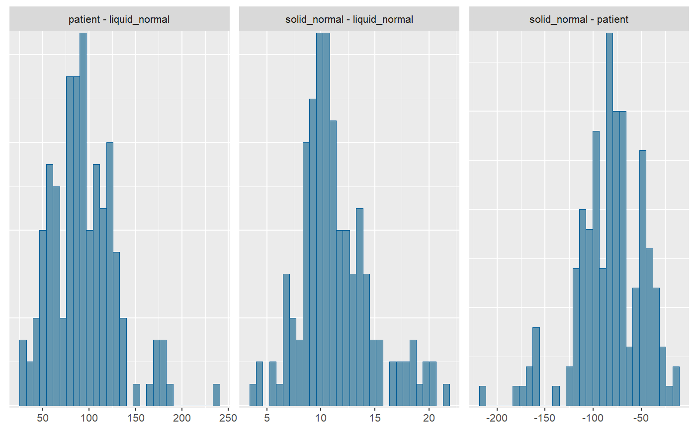
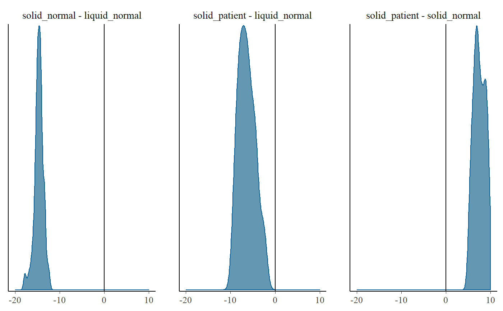

<!-- Generated by pkgdown: do not edit by hand -->
<!DOCTYPE html>
<html>
  <head>
  <meta charset="utf-8">
<meta http-equiv="X-UA-Compatible" content="IE=edge">
<meta name="viewport" content="width=device-width, initial-scale=1.0">

<title>S3 as.matrix for result of coef_diff_by_group — as.matrix.coef_diff_by_group_stan • breathteststan</title>

<!-- jquery -->
<script src="https://code.jquery.com/jquery-3.1.0.min.js" integrity="sha384-nrOSfDHtoPMzJHjVTdCopGqIqeYETSXhZDFyniQ8ZHcVy08QesyHcnOUpMpqnmWq" crossorigin="anonymous"></script>
<!-- Bootstrap -->
<link href="https://maxcdn.bootstrapcdn.com/bootswatch/3.3.7/cosmo/bootstrap.min.css" rel="stylesheet" crossorigin="anonymous">

<script src="https://maxcdn.bootstrapcdn.com/bootstrap/3.3.7/js/bootstrap.min.js" integrity="sha384-Tc5IQib027qvyjSMfHjOMaLkfuWVxZxUPnCJA7l2mCWNIpG9mGCD8wGNIcPD7Txa" crossorigin="anonymous"></script>

<!-- Font Awesome icons -->
<link href="https://maxcdn.bootstrapcdn.com/font-awesome/4.6.3/css/font-awesome.min.css" rel="stylesheet" integrity="sha384-T8Gy5hrqNKT+hzMclPo118YTQO6cYprQmhrYwIiQ/3axmI1hQomh7Ud2hPOy8SP1" crossorigin="anonymous">


<!-- pkgdown -->
<link href="../pkgdown.css" rel="stylesheet">
<script src="../jquery.sticky-kit.min.js"></script>
<script src="../pkgdown.js"></script>
  
  
<!-- mathjax -->
<script src='https://mathjax.rstudio.com/latest/MathJax.js?config=TeX-AMS-MML_HTMLorMML'></script>

<!--[if lt IE 9]>
<script src="https://oss.maxcdn.com/html5shiv/3.7.3/html5shiv.min.js"></script>
<script src="https://oss.maxcdn.com/respond/1.4.2/respond.min.js"></script>
<![endif]-->


  </head>

  <body>
    <div class="container template-reference-topic">
      <header>
      <div class="navbar navbar-default navbar-fixed-top" role="navigation">
  <div class="container">
    <div class="navbar-header">
      <button type="button" class="navbar-toggle collapsed" data-toggle="collapse" data-target="#navbar">
        <span class="icon-bar"></span>
        <span class="icon-bar"></span>
        <span class="icon-bar"></span>
      </button>
      <a class="navbar-brand" href="../index.html">breathteststan</a>
    </div>
    <div id="navbar" class="navbar-collapse collapse">
      <ul class="nav navbar-nav">
        <li>
  <a href="..//index.html">
    <span class="fa fa-home fa-lg"></span>
     
  </a>
</li>
<li>
  <a href="../reference/index.html">Reference</a>
</li>
      </ul>
      
      <ul class="nav navbar-nav navbar-right">
        <li>
  <a href="https://github.com/dmenne/breathteststan">
    <span class="fa fa-github fa-lg"></span>
     
  </a>
</li>
      </ul>
    </div><!--/.nav-collapse -->
  </div><!--/.container -->
</div><!--/.navbar -->

      
      </header>

      <div class="row">
  <div class="col-md-9 contents">
    <div class="page-header">
    <h1>S3 as.matrix for result of coef_diff_by_group</h1>
    </div>

    
    <p>Generates a matrix that can be used with plotting functions from
package <code><a href='http://www.rdocumentation.org/packages/bayesplot/topics/MCMC-distributions'>mcmc_hist</a></code>.</p>
    

    <pre class="usage"><span class='co'># S3 method for coef_diff_by_group_stan</span>
<span class='fu'>as.matrix</span>(<span class='no'>x</span>, <span class='no'>...</span>)</pre>
    
    <h2 class="hasAnchor" id="arguments"><a class="anchor" href="#arguments"></a> Arguments</h2>
    <table class="ref-arguments">
    <colgroup><col class="name" /><col class="desc" /></colgroup>
    <tr>
      <th>x</th>
      <td><p>Result of a call to <code>coef_diff_by_group(fit)</code></p></td>
    </tr>
    <tr>
      <th>...</th>
      <td><p>parameter name as string, e.g. <code>"m", "k", "beta", "t50_bluck_coward"</code>.
When missing, <code>"t50_maes_ghoos"</code> is assumed.</p></td>
    </tr>
    </table>
    
    <h2 class="hasAnchor" id="value"><a class="anchor" href="#value"></a>Value</h2>

    <p>mcmc array with columns of differences for use with functions from packages
bayesplot or coda</p>
    

    <h2 class="hasAnchor" id="examples"><a class="anchor" href="#examples"></a>Examples</h2>
    <pre class="examples"><div class='input'><span class='fu'>library</span>(<span class='no'>dplyr</span>)</div><div class='output co'>#&gt; <span class='message'></span>
#&gt; <span class='message'>Attaching package: ‘dplyr’</span></div><div class='output co'>#&gt; <span class='message'>The following objects are masked from ‘package:stats’:</span>
#&gt; <span class='message'></span>
#&gt; <span class='message'>    filter, lag</span></div><div class='output co'>#&gt; <span class='message'>The following objects are masked from ‘package:base’:</span>
#&gt; <span class='message'></span>
#&gt; <span class='message'>    intersect, setdiff, setequal, union</span></div><div class='input'><span class='fu'>library</span>(<span class='no'>breathtestcore</span>)
<span class='fu'>library</span>(<span class='no'>ggplot2</span>)</div><div class='output co'>#&gt; <span class='message'>Want to understand how all the pieces fit together? Buy the ggplot2</span>
#&gt; <span class='message'>book: http://ggplot2.org/book/</span></div><div class='input'><span class='fu'>data</span>(<span class='st'>"usz_13c"</span>, <span class='kw'>package</span> <span class='kw'>=</span> <span class='st'>"breathtestcore"</span>)
<span class='no'>data</span> <span class='kw'>=</span> <span class='no'>usz_13c</span> <span class='kw'>%&gt;%</span>
  <span class='kw pkg'>dplyr</span><span class='kw ns'>::</span><span class='fu'><a href='http://dplyr.tidyverse.org/reference/filter.html'>filter</a></span>( <span class='no'>patient_id</span> <span class='kw'>%in%</span>  <span class='fu'>c</span>(<span class='st'>"norm_001"</span>, <span class='st'>"norm_002"</span>, <span class='st'>"norm_003"</span>,
                        <span class='st'>"norm_004"</span>, <span class='st'>"pat_001"</span>, <span class='st'>"pat_002"</span>,<span class='st'>"pat_003"</span>)) <span class='kw'>%&gt;%</span>
  <span class='fu'><a href='http://www.rdocumentation.org/packages/breathtestcore/topics/cleanup_data'>cleanup_data</a></span>()
<span class='no'>fit</span> <span class='kw'>=</span> <span class='fu'>stan_group_fit</span>(<span class='no'>data</span>, <span class='kw'>iter</span> <span class='kw'>=</span> <span class='fl'>300</span>, <span class='kw'>chains</span> <span class='kw'>=</span> <span class='fl'>1</span>)
<span class='no'>cf</span> <span class='kw'>=</span> <span class='fu'><a href='http://www.rdocumentation.org/packages/breathtestcore/topics/coef_diff_by_group'>coef_diff_by_group</a></span>(<span class='no'>fit</span>)
<span class='fu'>str</span>(<span class='no'>cf</span>)</div><div class='output co'>#&gt; Classes <U+0091>coef_diff_by_group_stan<U+0092>, <U+0091>tbl_df<U+0092>, <U+0091>tbl<U+0092> and 'data.frame':	24 obs. of  6 variables:
#&gt;  $ parameter: chr  "beta" "k" "m" "t50" ...
#&gt;  $ method   : chr  "exp_beta" "exp_beta" "exp_beta" "bluck_coward" ...
#&gt;  $ groups   : chr  "patient - liquid_normal" "patient - liquid_normal" "patient - liquid_normal" "patient - liquid_normal" ...
#&gt;  $ estimate : num  0.36544 -0.00427 -1.06236 40.22748 93.83344 ...
#&gt;  $ cred.low : num  0.04671 -0.00581 -2.06371 10.29954 36.15274 ...
#&gt;  $ cred.high: num  0.93309 -0.00175 0.14677 71.13045 177.75294 ...
#&gt;  - attr(*, "chain")='data.frame':	3600 obs. of  6 variables:
#&gt;   ..$ key   : chr  "m" "m" "m" "m" ...
#&gt;   ..$ value1: num  24.4 24.8 26.5 26.4 22.5 ...
#&gt;   ..$ value2: num  22.6 24.2 25.2 24.8 21.3 ...
#&gt;   ..$ group1: chr  "liquid_normal" "liquid_normal" "liquid_normal" "liquid_normal" ...
#&gt;   ..$ group2: chr  "patient" "patient" "patient" "patient" ...
#&gt;   ..$ diff  : num  -1.76 -0.61 -1.3 -1.65 -1.22 ...
#&gt;  - attr(*, "comment")= chr "Breath test data from healthy volunteers and patients, courtesy Gastroenterology and Hepatology, University Hospital Zurich"</div><div class='input'><span class='co'># Calling without parameters gives Maes/Ghoos t50</span>
<span class='kw pkg'>bayesplot</span><span class='kw ns'>::</span><span class='fu'><a href='http://www.rdocumentation.org/packages/bayesplot/topics/MCMC-distributions'>mcmc_hist</a></span>(<span class='fu'>as.matrix</span>(<span class='no'>cf</span>))</div><div class='output co'>#&gt; <span class='message'>`stat_bin()` using `bins = 30`. Pick better value with `binwidth`.</span></div><div class='img'></div><div class='input'><span class='co'># Use a function from the bayesplot universe</span>
<span class='no'>dens</span> <span class='kw'>=</span> <span class='kw pkg'>bayesplot</span><span class='kw ns'>::</span><span class='fu'><a href='http://www.rdocumentation.org/packages/bayesplot/topics/MCMC-distributions'>mcmc_dens</a></span>(<span class='fu'>as.matrix</span>(<span class='no'>cf</span>, <span class='kw'>parameter</span> <span class='kw'>=</span> <span class='st'>"m"</span>))
<span class='co'># use suppressMessages to avoid a message "another scale"</span>
<span class='fu'>suppressMessages</span>(
  <span class='no'>dens</span> + <span class='fu'><a href='http://www.rdocumentation.org/packages/ggplot2/topics/geom_abline'>geom_vline</a></span>(<span class='kw'>xintercept</span> <span class='kw'>=</span> <span class='fl'>0</span>) + <span class='fu'><a href='http://www.rdocumentation.org/packages/ggplot2/topics/scale_continuous'>scale_x_continuous</a></span>(<span class='kw'>limits</span><span class='kw'>=</span> <span class='fu'>c</span>(-<span class='fl'>20</span>,<span class='fl'>10</span>)))</div><div class='img'></div></pre>
  </div>
  <div class="col-md-3 hidden-xs hidden-sm" id="sidebar">
    <h2>Contents</h2>
    <ul class="nav nav-pills nav-stacked">
      <li><a href="#arguments">Arguments</a></li>
      
      <li><a href="#value">Value</a></li>
      
      <li><a href="#examples">Examples</a></li>
    </ul>

  </div>
</div>

      <footer>
      <div class="copyright">
  <p>Developed by Dieter Menne, Menne Biomed Consulting Tübingen</p>
</div>

<div class="pkgdown">
  <p>Site built with <a href="http://hadley.github.io/pkgdown/">pkgdown</a>.</p>
</div>

      </footer>
   </div>

  </body>
</html>
